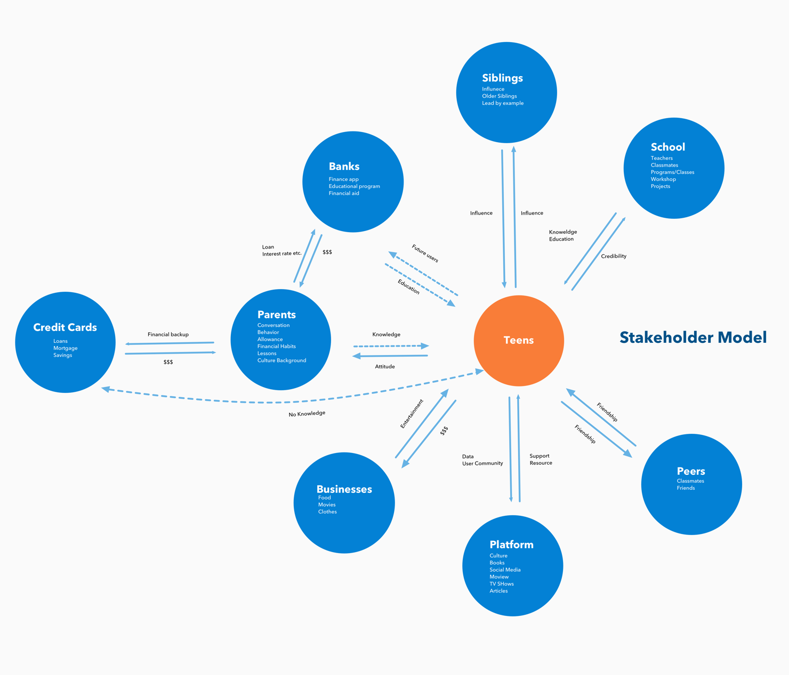
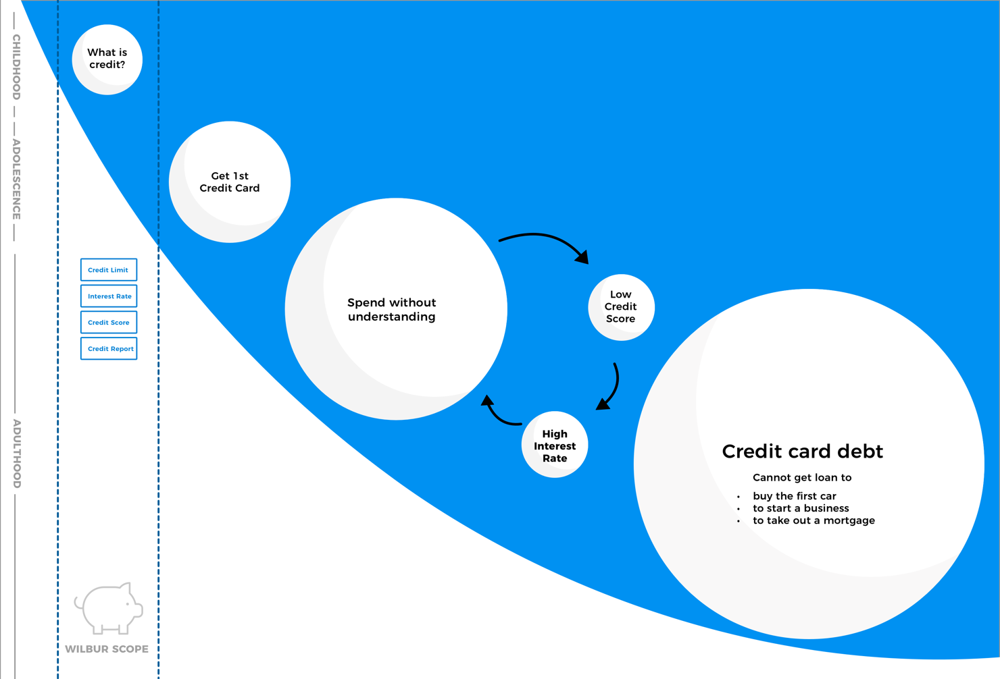

Our team conceived of and designed a future service that could leverage data to help parents and teens have a dialogue about financial literacy for PNC Bank, our client. Our solution, Wilbur, simulates the real world to teach and and allow teenagers to practice good credit score building habits.
We first created a set of questions gauging financial knowledge, such as current financial habits, emotional responses to financial conversations, and familiarity and knowledge of financial terms. The questions were created from insights after examining related articles. With these questions, we interviewed both parents and teenagers, the demographics we would be targeting our service towards. We found out that: 1. Some teens want to earn money and are interested in becoming financially literate, so that they can buy more things. 2. Teenagers primarily spend on clothes, food, and social outings. 3. Some teenagers use saving apps to keep track of their expenses. However, it is a trend that many teenagers are only using apps that deal with short-term saving but not other aspects of finance.
With insights gained from interviews and financial literacy articles, we created a stakeholder model to identify the stakeholders of our problem. From the model, we found that there is a lack of variety in the financial tools that teenagers use; most of the current tools focus on saving and budgeting. We also found that there is a huge gap between the current state of teenagers and credit cards.
Exploring further into the problem of not preparing teenagers for credit cards, we found that more college students drop out from school because of credit card debt rather than poor academic performance. Most young adults were learning about the credit system from their parents or through painful trial and error. To visualize this problem, we created a current state model that highlights the snowball effect of credit card debt for teenagers and young adults.
After over 30 concept iterations and speed dating methods, we solidified our final concept - Wilbur. We created a service blueprint for our service that caters to all of our stakeholders' needs. We focused on the motivation and engagement of our stakeholders during their journey throughout the service, as well as the connecting of parents and teenagers through facilitating conversations on budgeting and spending.